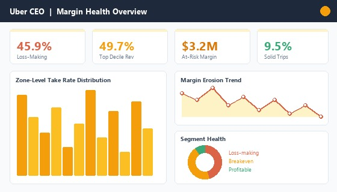
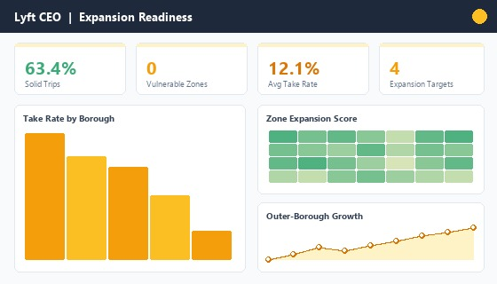
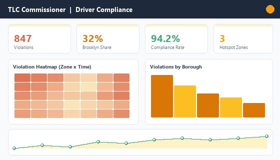
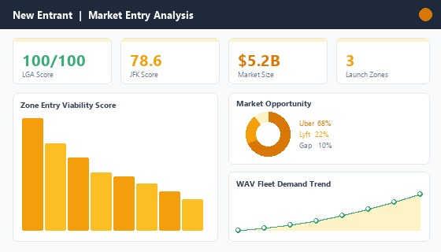

The initial brief was to analyze ride-hailing economics in NYC. But that question was too vague to produce actionable insight. I reframed it into four separate questions for four separate stakeholders: Uber CEO (margin health), Lyft CEO (expansion readiness), TLC Commissioner (driver compliance), and a hypothetical new entrant (launch viability).
This reframing changed everything: it required zone-level scoring, not platform averages. Each stakeholder needed different metrics, different granularity, and different recommendations.
Uber's top decile generates 49.7% of all platform margin, an extreme concentration risk. Meanwhile Lyft's outer-borough strategy shows stronger take-rate consistency (63.4% solid trips vs Uber's 9.5%). LaGuardia Airport scored 100/100 as a new entrant launch zone. JFK scored 78.6.
The data revealed that the ride-hailing market is not one market; it is dozens of micro-markets, each with different economics.
Built 12 SQL query files against 100,000 TLC trip records (HV0003=Uber, HV0005=Lyft). Variables: fare, driver pay, wait time, zone, distance, violation flags. Created 4 Power BI dashboards, one per stakeholder perspective.
SELECT pickup_zone,
AVG((base_fare - driver_pay) / NULLIF(base_fare, 0)) AS take_rate,
COUNT(*) AS trips
FROM trips
GROUP BY pickup_zone
ORDER BY take_rate ASC;
Recommendations:
Each dashboard was built for a specific decision-maker, answering a different strategic question with zone-level data from 100K TLC trip records.



